Success definition
What does success for the entire system look like?
ReLEAF protects plants on demand by making the protectant where it is needed. No single component does that: biological, hardware and computational systems have to run as one continuous process.
A successful ReLEAF system therefore has to do more than show that each component works alone: stress has to be detected, the engineered bacteria have to make the intended protectant and stay contained, the reactor has to be held at conditions that can be read while it runs, and the plant has to benefit.
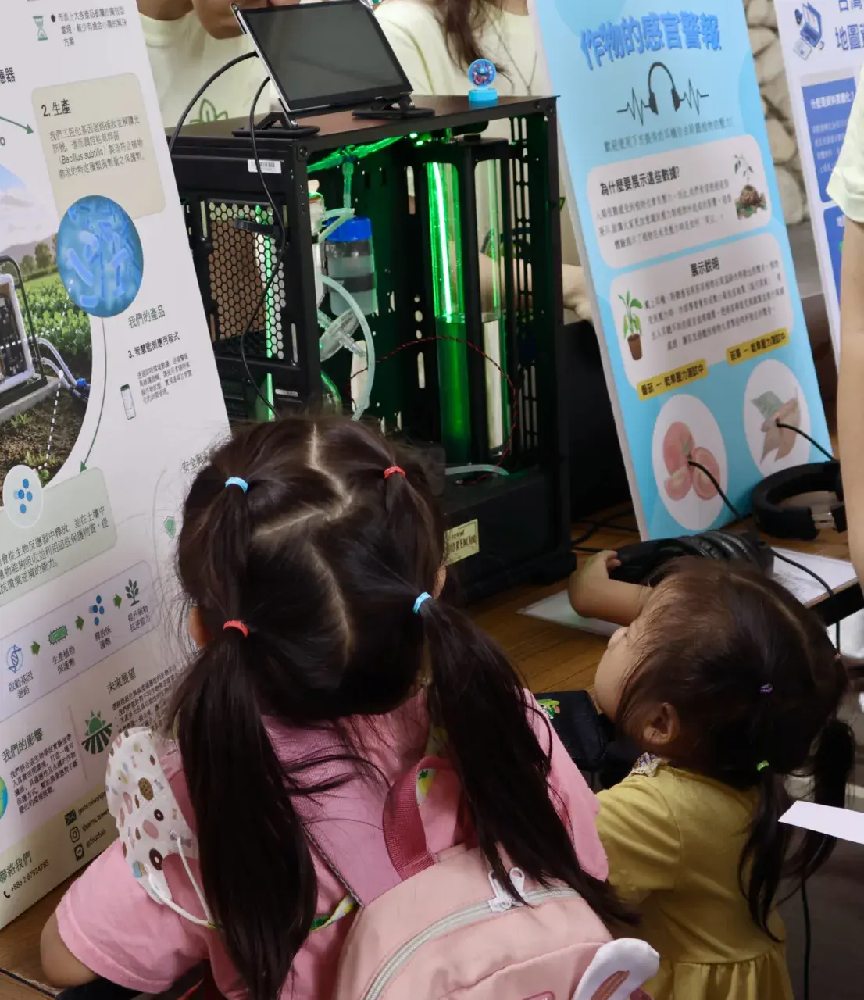
This led us to define ReLEAF’s success as a complete chain of five stages:
- 1. Detect, Forecast & ActivateAIoT Sensor & Green Light
- 2. ProduceB. subtilis CcaSR
- 3. ContainHollow-Fiber Membrane
- 4. MonitorIn-line Sensors
- 5. ProtectPlant Protected
If one part of the chain fails, success in the others need not reach the final goal. With this many interconnecting systems, what would establish that ReLEAF works?
What does ReLEAF need to accomplish?
At the system level, ReLEAF needs to accomplish five functions:
- Detect, Forecast & ActivateIdentify when the plant is experiencing a relevant environmental stress, forecast stress that is coming, and convert that into the appropriate production response.
- ProduceProduce the intended plant protectant using the engineered bacterial system.
- ContainKeep the engineered bacteria contained within the bioreactor while allowing the protectant to leave.
- MonitorMeasure the conditions the culture is held at — cell concentration, pH, pressure and flow — while a run is in progress, so that unreliable operation is visible before it invalidates the run.
- ProtectProduce a measurable improvement in plant performance under stress.
System validation framework
To test ReLEAF as a complete system we built a validation framework on the five functional stages, asking of each:
- What does ReLEAF need to accomplish?
- What can be quantitatively measured?
- What level of performance should be considered successful?
- What evidence is needed to support the claim?
- How does this stage affect the rest of the system?
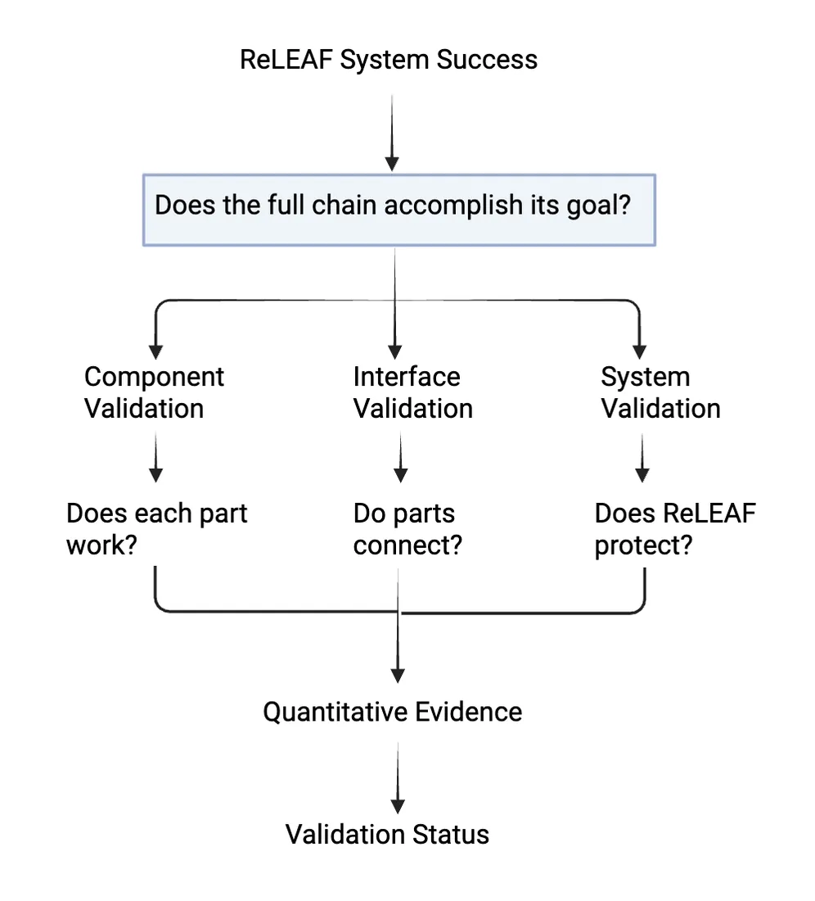
Success criteria
Each stage carries a quantified metric, so every criterion is experimentally testable and can be shown to be met or not.
- 1. Detect, Forecast & Activate
Identify when the plant is experiencing stress, forecast stress that is coming, and convert that into the light response
StartBasic sensor setup and a bare LED holder (no quantitative threshold)
Success criteria- ≥90%detection accuracy
- ≥90%forecast cases above threshold
- ≥90%correct light activation
AIoT Sensor System + LPA
- 2. Produce
Produce the intended type and amount of protectant using engineered B. subtilis
StartCircuit design (untested)
Success criteria- Western Blotconfirms target protectant production
- ELISAquantifies released protectant production
Genetic circuit
- 3. Contain
Keep engineered bacteria contained within the bioreactor
StartInitial reactor design (untested)
Success criteria- 0colony formation on shell-side
- lumen-sidesample confirms bacterial presence
Hollow-fiber membrane + bioreactor
- 4. Monitor
Track the conditions the culture is held at while a run is in progress
StartHand sampling, read offline on a cuvette spectrophotometer
Success criteria- in-line OD600agrees with a reference spectrophotometer
- pH, pressure, flowreproducible during operation
Photometer + reactor sensors
- 5. Protect
Produce measurable improvement in plant performance under stress
StartStress response observed (qualitative)
Success criteria- slight trendtoward improved plant growth with protectant treatment
- testedunder heat and salinity stress
Agar + hydroponics + soil
Our first attempts
Before we could build a successful integrated system, we had to determine what did not work. Each part of our project began with an initial prototype that failed. However, these early experiments and iterations allowed us to identify weaknesses, understand how they affected the larger system, and improve upon them.
We organized these early failures by subsystem and evaluated each one with four questions:
- FailureWhat went wrong?
- CauseWhy did it fail?
- ConsequenceWhat was the consequence?
- LessonWhat did we learn from it?
Our initial prototypes
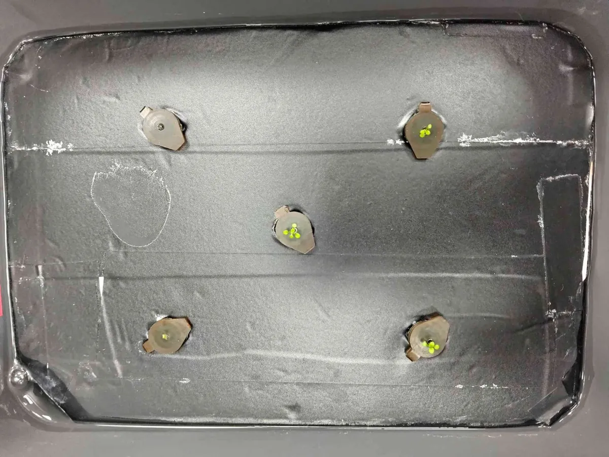
Plant system
Hydroponics
Our first hydroponics box prototype was constructed using a Styrofoam board covered with black tape, with holes created to accommodate seed holders. The design was based on a published research paper and a YouTube tutorial. However, the prototype encountered contamination issues, highlighting a key limitation that needed to be addressed in subsequent iterations.
- Failure
- Contamination was the major limitation, preventing reliable plant growth.
- Cause
- Used a hand-punched board and didn’t exchange the growth medium often enough, giving us little control over hole size and cleanliness.
- Consequence
- Only 4 of 10 seeds germinated, too few to establish a baseline growth.
- Lesson
- At this stage, we recognized that both physical consistency and environmental cleanliness needed to be addressed.
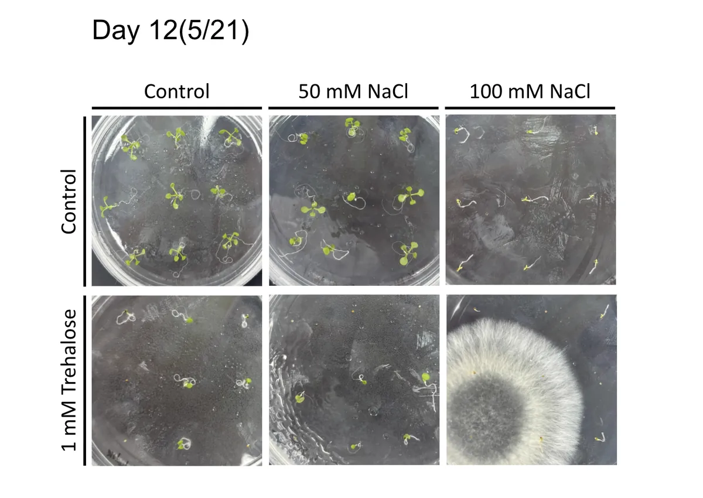
Plant system
Agar
We began with simple NaCl and trehalose combinations to determine whether agar-grown Arabidopsis could provide a controlled system for studying salinity stress and protectant efficacy. 100 mM NaCl was too severe, while the initial protectant treatments did not produce obvious visual differences.
- Failure
- No clear phenotypic effects or protectant efficacy due to unsuitable salinity stress concentrations and subtle initial treatment outcomes.
- Cause
- The selected 100 mM NaCl concentration was excessively severe, preventing nuanced observation, while initial protectant dosages were insufficient to yield obvious visual differences.
- Consequence
- The initial experimental setup could not reliably demonstrate the protective capabilities of trehalose or establish an effective baseline for salinity stress.
- Lesson
- Need to establish a wider NaCl concentration testing range and protectant dosage to establish a readable dynamic range.
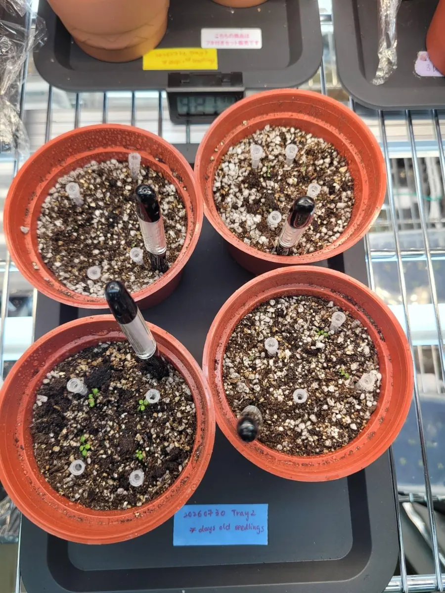
Plant system
Soil
Four trays of peat, perlite and vermiculite, watered on a two-person shift roster. Salt behaves completely differently here compared to hydroponics and agar. The first attempt built up 25 mM per day toward 100 mM, a gradual ramp proposed by Dr. Verslues. Prof. Cheng’s assessment, recorded on 2 September, was blunt: for a month-old plant that dose is too mild, and worse, watering between doses washes the salt back out instead of letting it accumulate.
- Failure
- The salt ramp did not stress month-old soil plants enough.
- Cause
- The dose was too mild for month-old plants, and watering between doses washed the salt out.
- Consequence
- The soil plants were not stressed enough to visibly show whether a protectant helps.
- Lesson
- Salt dose has to match the plant’s age and be applied so that it accumulates.
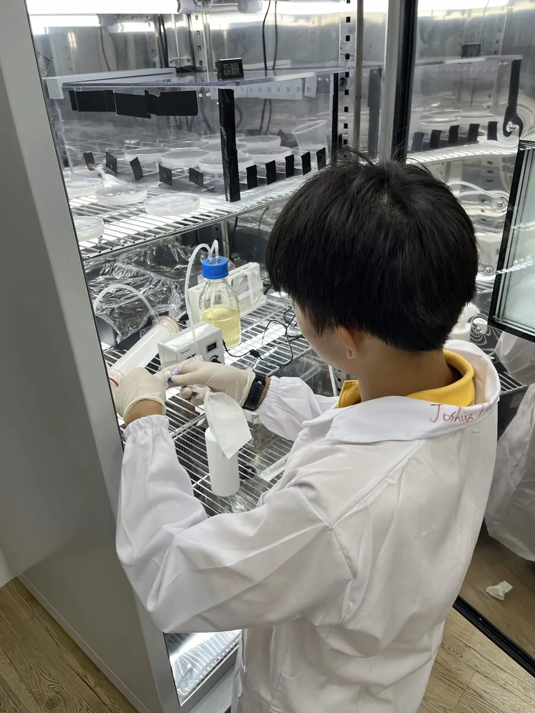
Bioreactor and hardware
Bioreactor
The first bioreactor prototype tested whether a continuous-flow loop could circulate B. subtilis through a PES hollow-fiber membrane. The system consisted only of a 300 mL culture reservoir, membrane cartridge, peristaltic pump, and luer valve. The system reached 94 mL/min, but the run ended early due to leakage at the pump head, demonstrating that containment depended on the entire fluidic loop—not just the membrane.
- Failure
- A leak developed around the pump head, forcing us to stop the experiment early. We also observed differences between the OD600 measured in the tubing and in the reservoir, suggesting that the culture was not evenly mixed.
- Cause
- Weak tubing connections at the pump head, and no stirring in the reservoir.
- Consequence
- The run stopped before it could show that the loop keeps the culture contained over time.
- Lesson
- These failures showed us that simply circulating the culture was not enough; the reactor also needed reliable connections and effective mixing.

Bioreactor and hardware
LPA
Our initial prototype consisted of an LED holder and a tube holder assembled on a laboratory bench, with the LEDs controlled directly through a breadboard. At this stage, only a few channels were connected, and the setup lacked an enclosure and light shielding.
- Failure
- This established the basic idea of switching between green and red light, but it was not yet suitable for quantitative comparison.
- Cause
- Different LEDs could produce different outputs, and the cultures were still exposed to ambient light.
- Consequence
- A difference between conditions could have come from the LEDs or the room rather than from the light dose.
- Lesson
- Nominally identical LEDs did not necessarily produce identical outputs. We also realized that controlling the LEDs alone was not enough.

Bioreactor and hardware
Photometer
Our first photometer prototype featured a horizontal optical path, with each component mounted on a rail to allow independent adjustment. However, the measurements exhibited significant fluctuations due to gas bubbles accumulating in the flow cuvette and interfering with the light beam. Additionally, the lens and beamsplitter mounts were insufficiently secured, causing the optical alignment to shift during handling.
- Failure
- Readings fluctuated significantly.
- Cause
- Bubbles were accumulating in the flow cuvette and passing through the light path, while the adjustable optical components could shift out of alignment.
- Consequence
- The readings could not yet be read as OD600, so the culture still had to be sampled by hand.
- Lesson
- We moved from an adjustable prototype toward a reproducible instrument.
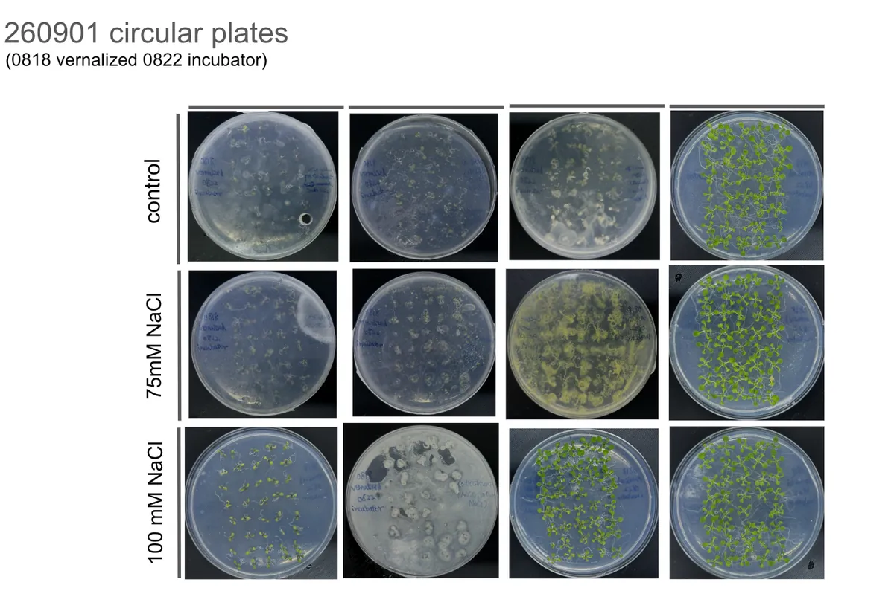
Genetic circuit and production
ACCD production
Tested ACCD produced by the engineered Bacillus subtilis on agar-grown Arabidopsis. The experiment encountered contamination, making it an early failure that showed the production-to-plant testing workflow still needed improvement.
- Failure
- Both trials were invalidated by bacterial contamination, and a Western Blot also found no detectable ACC deaminase in the engineered B. subtilis.
- Cause
- Circuit activation and protein production could not simply be assumed from one another.
- Consequence
- We therefore could not use these experiments as evidence that ACC deaminase protected the plants.
- Lesson
- We needed evidence at every stage: signal response → ACCD expression → ACCD activity → sufficient production → measurable plant protection.
Outreach
Expert engagement
Our very first attempt at communicating with professionals back in March to get feedback on our project idea. Dr. Lin advised us to consider not using a kill switch, changing the target plant (which was originally Medicago), consider using hydroponics, and shift focus to seedling-stage testing.
- Failure
- At first, the project was broad, with multiple stresses, Medicago, hydroponics, and several possible ways of testing plant responses.
- Cause
- We had not yet narrowed the plant, the stress or the way we would test them.
- Consequence
- We could not yet say what a successful test would look like.
- Lesson
- Medicago + kill switch + many stresses → Arabidopsis + hydroponics + focused stresses
Journey toward success
Success for ReLEAF is more than meeting a set of specific criteria, however. Throughout our project, we encountered unexpected challenges, revised our ideas, learned from failure, and discovered new ways for our work to create value. From building our first hydroponics prototype based on a published paper and YouTube video to developing a design that was later adopted by a professor for use with her students, each step of our journey brought us somewhere we had not initially planned to go. In this section, we look beyond our final quantitative results to the moments, challenges, and outcomes that shaped ReLEAF, and celebrate how far our project has come.
LPABioreactor and hardware
Before we could use light to control protectant production, we needed to know how our engineered Bacillus subtilis responds to different wavelengths and intensities. We began with a dual-LED arrangement: green light to turn protectant production on, red light to turn it off.
The first prototype drove two LEDs per column directly from a breadboard. It established the switching principle but could not support quantitative comparison: different LEDs produced different outputs, and the cultures were still exposed to ambient light.
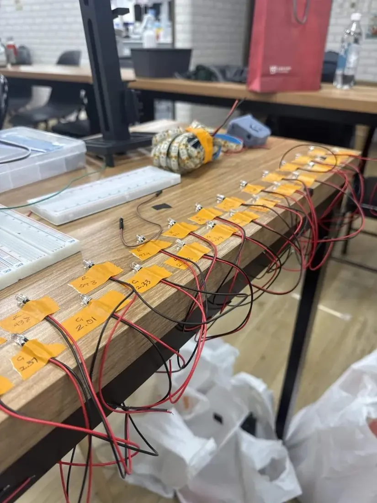
We therefore expanded the system into a 4 × 6 array, which tests six light conditions with four replicates each, and introduced low, medium and high intensity levels for both green and red light.

Measuring all forty LEDs exposed a second source of variation: nominally identical LEDs did not produce identical outputs. Grouping them by measured output improved consistency between replicates, but the differences between groups were too small to establish distinct intensity levels, so the low, medium and high settings moved into software, by pulse-width modulation. An enclosure went round the array at the same time, to keep ambient light off the low-intensity conditions.
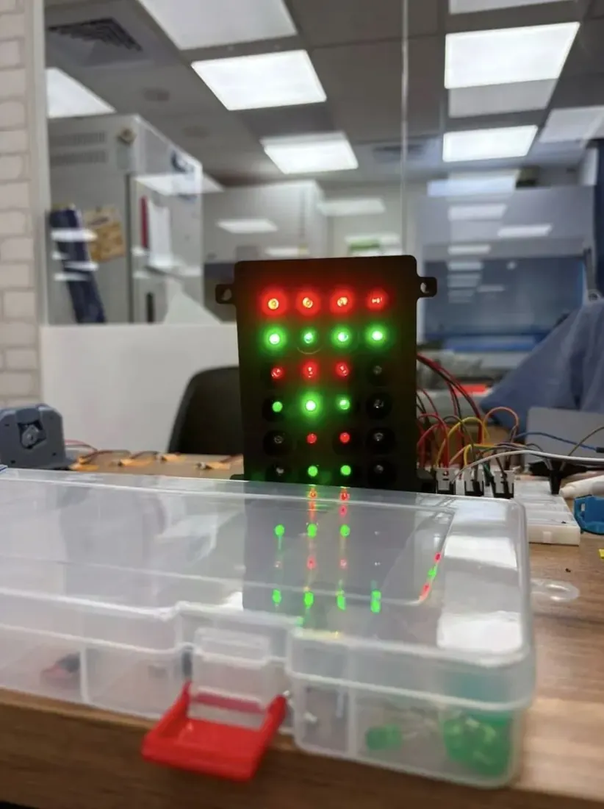
In the third iteration LPA became a self-contained instrument. The Arduino and electronics moved into an outer frame, intensity became software-controlled through three MOSFET channels, and the tube holder and sliding components were designed for easier assembly. Six fixed light conditions can be applied at once, with four replicate cultures each.
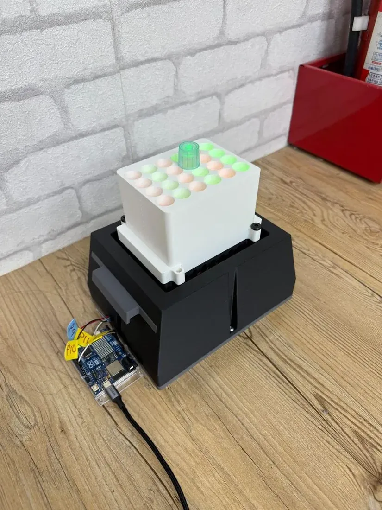
An overnight test on a shaker then revealed the mechanics. One supporting post snapped under vibration, loosening several electrical connections, and the white tube holder allowed light to leak between neighbouring wells. Reliable illumination required structural stability and optical isolation, not only electrical control.
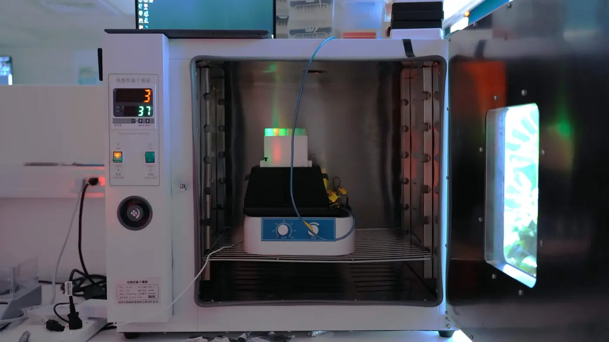
We redesigned the instrument: four bottom-plate screws instead of two, reinforced solder joints, and a black tube holder with thicker printed walls, keeping the 24-culture, six-condition layout. One limitation stands with it. Our light measurements are recorded in lux, which is weighted for human vision and cannot establish equal biological photon doses for green and red, so photon flux, illumination uniformity and the actual wavelengths of our LEDs all have to be measured before intensities can be compared quantitatively.
LPA has since carried a full culture experiment. B. subtilis WB800 carrying the CcaS/CcaR circuit grew in it under red and green light at 100%, and anti-His ELISA on those cultures put a figure on a difference the Western blot could only call small: at 13 h the green cultures reached 12.9 µg/mL of His-tagged ACC deaminase against 11.8 µg/mL under red, and at 16 h 12.5 against 12.1 µg/mL. Green sits above red at both times, but with two samples a side and ranges that overlap, this does not yet establish that green light controls production. Validating that control is the instrument’s next job.

HydroponicsPlant system
We met Professor Cheng Mei-Chun of NTU in March, before we had established a plant-growth protocol or built a hydroponic system. She showed us how her group grows seedlings hydroponically, which set our direction for growing Arabidopsis thaliana in water.
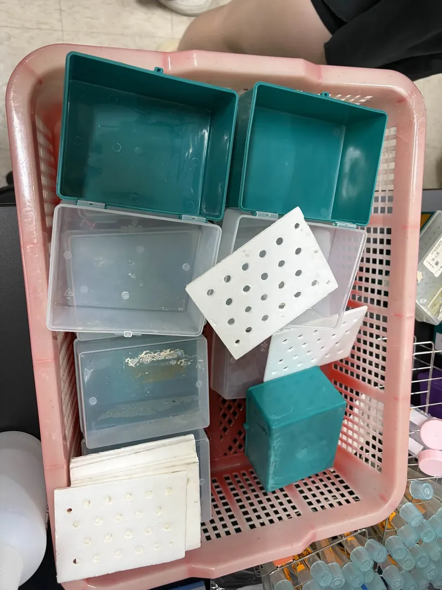
Our first prototype was adapted from Pierre Tocquin et al.’s 2003 hydroponic system for Arabidopsis thaliana: an opaque black box, a floating Styrofoam board, black tape and microcentrifuge tube lids to hold the seedlings. Contamination quickly became the limiting problem.

For the second prototype we replaced the improvised container with a commercially ordered box holding 85 mL of growth medium, but only three seedlings germinated and contamination and leakage remained unresolved. Prototype 3 used a transparent box so that root development could be seen; only one seedling germinated. Changing the container was not enough to make the environment reliable.
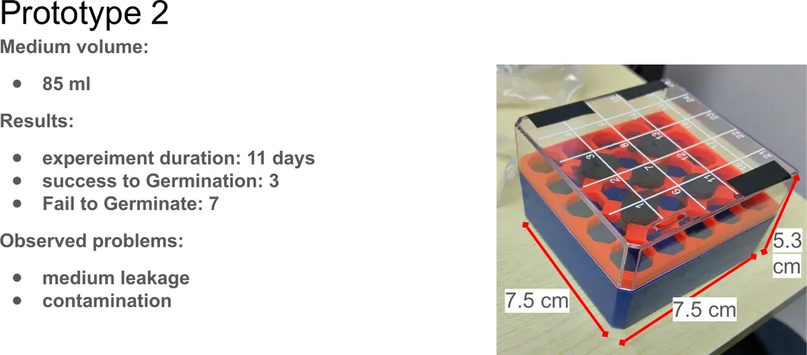
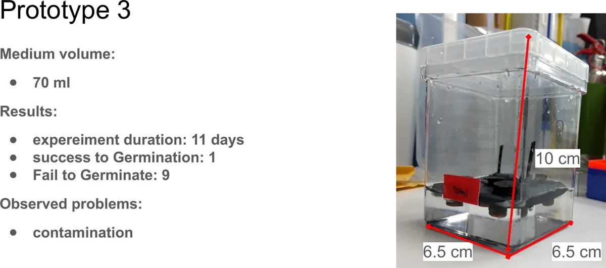
Prototype 4 moved to a larger growth box, with zip ties on opposite sides of the floating board to improve its balance. Prototype 5 switched to Eppendorf tubes and lowered the agar concentration used for germination. The hand-cut holes in the Styrofoam board stayed inconsistent, and contamination continued to interfere with growth.
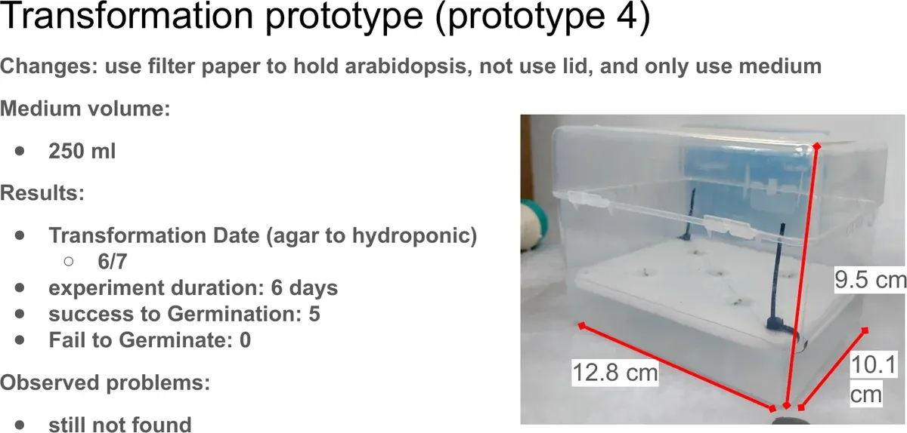
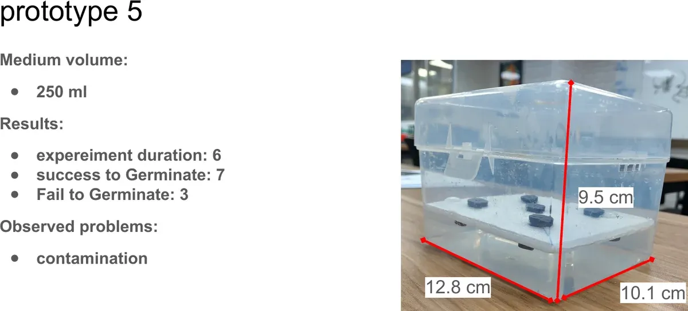
We then replaced the handmade board with a 3D-printed design with uniformly sized holes, changed the growth medium more frequently, and aerated the solution to raise oxygen availability at the roots. Later trials grew stably with few visible contamination problems, which moved our attention from keeping the plants alive to running experiments on them.

With a working system we asked whether the timing of protectant application changes a plant’s response to stress. In the first salinity experiment, 13-day-old Arabidopsis was exposed to 100 mM NaCl and CH peptide applied before, during and after exposure, against a stressed control; the plants were photographed over ten days, then measured for fresh weight and chlorophyll content.
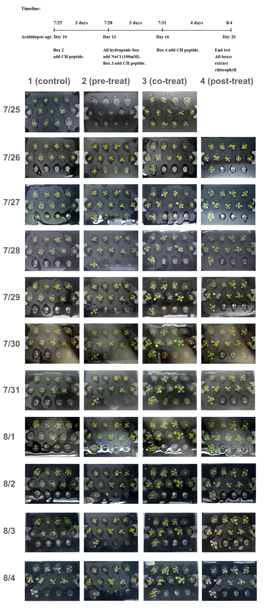
Co-treatment gave the highest fresh weight, 0.2029 g against 0.0862 g in the control, and most of its leaves were still green after seven days of salt while the other groups had gone yellow or white. Chlorophyll was less clear: co-treatment was highest when normalized by plant number and lowest when normalized by fresh weight. The groups also differed in initial growth, so the difference cannot be attributed to CH peptide alone.
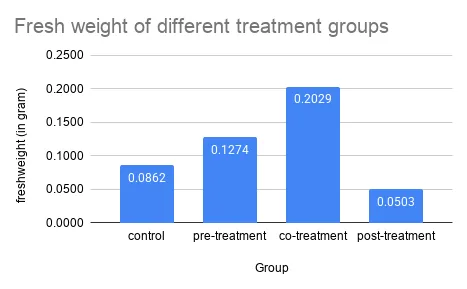
The same comparison under heat put the control highest in chlorophyll per gram of fresh weight and the pre-treatment group highest in fresh weight, so which indicator is chosen decides the answer. Before our own protectants could go on the racks we also had to find what the carrier does by itself: B. subtilis TB medium was applied at six dilutions, and every one stronger than 1/16 stressed the plants on its own. That set the ceiling for every protectant dose that followed.
On that baseline our own protectants gave their first signals. Under 37 °C heat, ACC deaminase at 1/80 or stronger held higher fresh weight and chlorophyll than the WB800 and medium controls, and BoPEP4 gave a slight rescue at 1/40. Under 100 mM NaCl most groups bleached, and BoPEP4 at 1/40 was the exception: every plant in it stayed green, with the highest fresh weight and chlorophyll per plant of the set. The matching ACC deaminase salinity run cannot be read, because raising the enzyme concentration raised the TB medium with it and the two effects are not separable — the control we had just established caught its own experiment.
In August we returned to Professor Cheng with the revised system and protocol, and received further feedback on our experimental conditions and plant-growth procedures. She has since adopted the design for her graduate students: a system that began as an attempt to reproduce a published method became one another research group could use.

AgarPlant system
We began growing Arabidopsis thaliana on agar, as a more controlled platform for testing plant responses to stress.
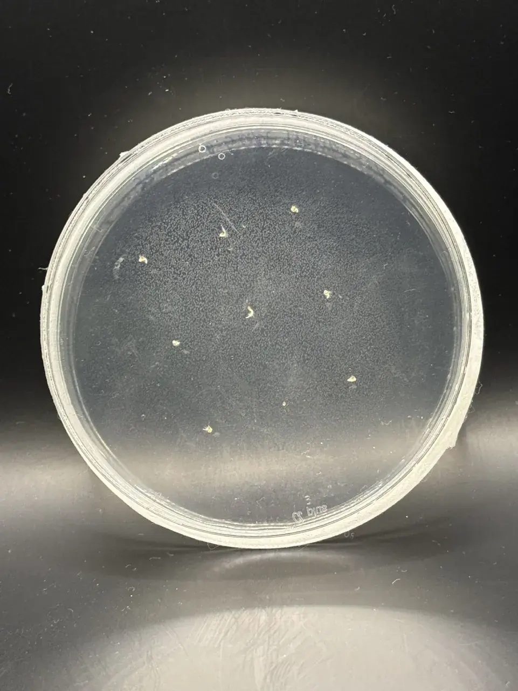
The first experiments established a workable protocol: two days of stratification, then four-day-old seedlings transferred onto stress plates. Germination was inconsistent and contamination frequent, and contamination was the first obstacle to clear — seed sterilization and careful transfers proved critical, and transfers moved into the biosafety cabinet under supervision.

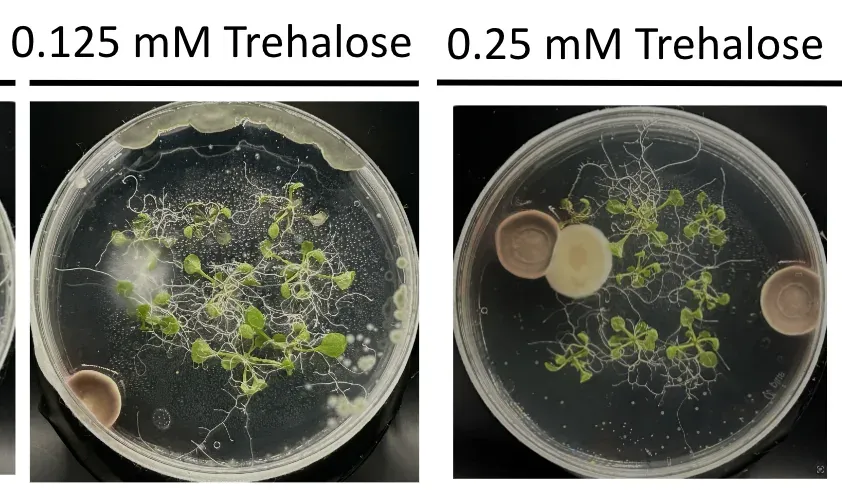
Once growth was consistent we tested whether trehalose protects Arabidopsis against salt stress. The answer turned on the dose. Under 100 mM NaCl, 1.0 mM trehalose significantly raised total chlorophyll over the untreated stressed control while 0.25 and 0.5 mM did nothing; under 150 mM the rescue was dose-dependent, 5 and 10 mM both significant. A later set put 5 mM against 100 mM NaCl and measured an 8.7-fold rise in chlorophyll with about 3 cm more root than its control, and the same dose did nothing at 75 mM. No single concentration held across the salt levels.
Counting how many seedlings grew was not sensitive enough, so we moved to vertical agar plates where root growth can be traced and measured, replacing a visual comparison with a quantitative readout. We then raised the salt to find a stress severe enough to measure but not lethal. At 250 mM NaCl the seedlings bleached within a few days and primary roots stayed within 1 mm, leaving no room for a protectant to show an effect.
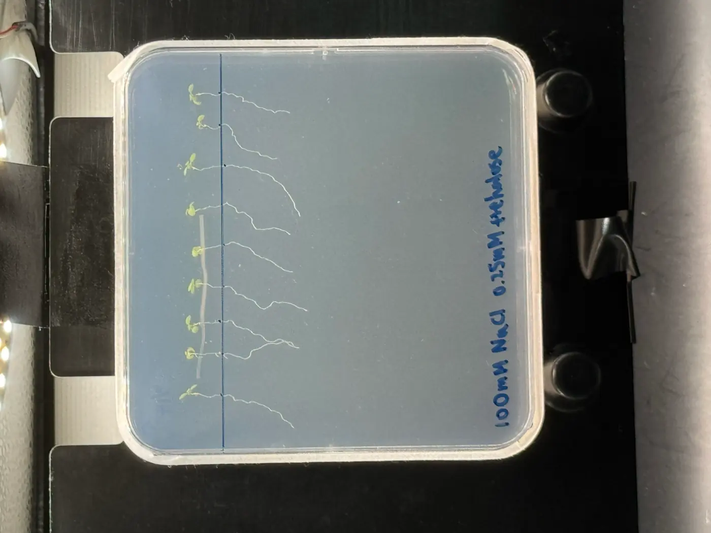
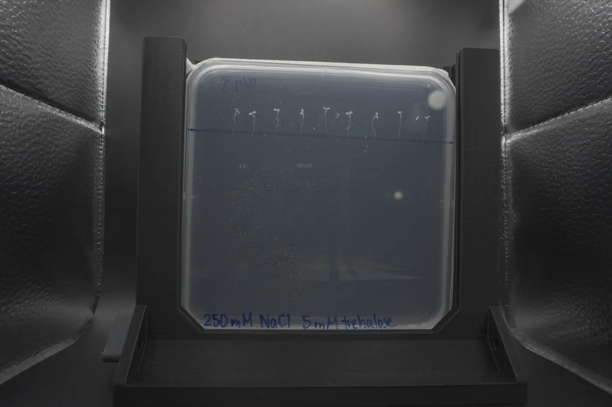
A wider ladder at 75, 100 and 150 mM then defined a usable stress window. Mean primary root length fell from 74.95 mm with no added salt to 34.77 mm at 75 mM, 11.00 mm at 100 mM and 1.36 mm at 150 mM: 75–100 mM injures the plants while keeping them alive, and 150 mM leaves very little growth to rescue. That ladder is also the stress scale the dry lab calibrates its model on.

Delivery was the next problem. Pipetting liquid onto the plates can float seedlings off the agar, and spraying leaves droplets on the leaves. We moved to transferring seedlings onto fresh plates containing the treatment, so that the dose is set by the medium rather than by how much liquid stays on the plant.
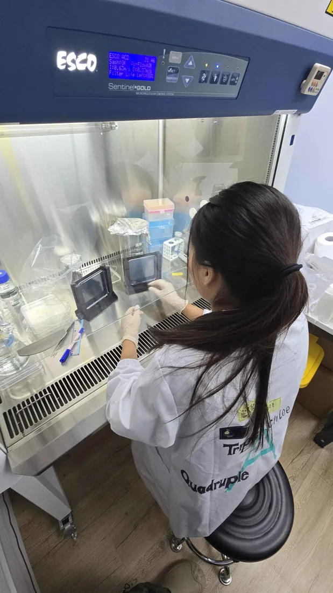
On that platform we tested CH Bio peptide at three timings: before, during and after salt stress. Timing matters to ReLEAF because it determines when the bioreactor has to begin producing a protectant.
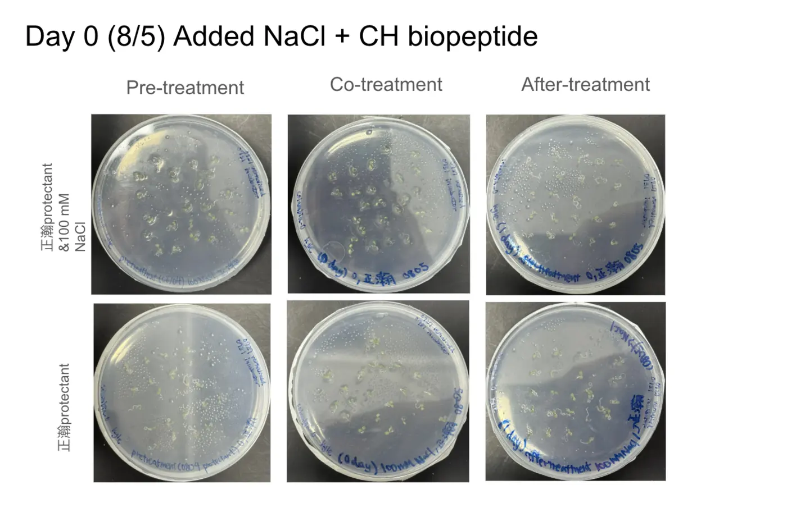
The first ACC deaminase (ACCD) trials were a setback. Both Set 8 trials were affected by bacterial contamination, and an initial Western blot detected no ACCD in the engineered B. subtilis samples tested, so neither trial can establish that the plants received the intended protectant.
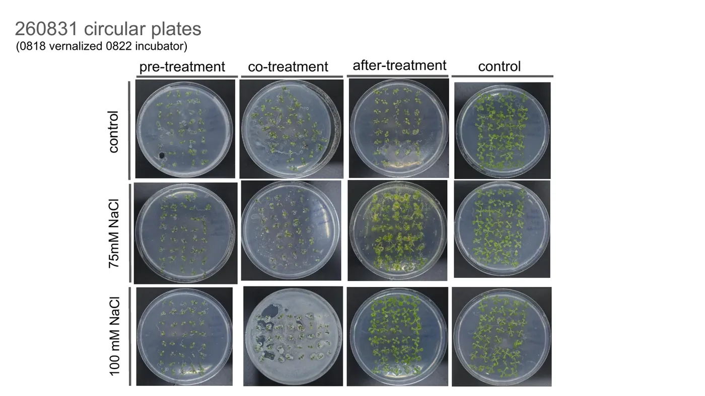
Experiment #9 tested ACCD at 0, 75 and 100 mM NaCl on circular horizontal agar plates, comparing treatment before, during and after salt exposure. Post-treatment ACC deaminase showed rescue efficacy at 75 mM NaCl against the unstressed treatment control; contamination in one treatment group limits how far the set can be read.
Experiment #10 applied the same design to BoPEP4, and experiment #11 to AtLEA14 against a TB medium control. Both sets are planted, photographed and charted on all three readouts, and neither has been written up, so we draw no conclusion from them here. They are the two open sets of the agar screen.
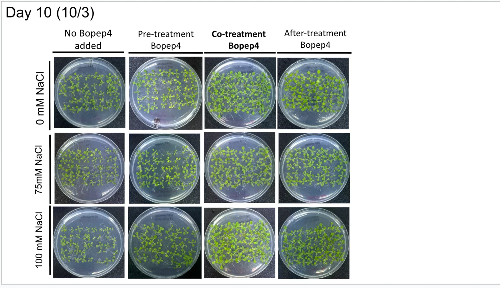
We also tested ACCD under 37 °C heat on vertical plates, five days of thermo priming and five of recovery, against untreated, pre-, co- and post-treatment groups. Among the heat-stressed groups pre-treatment ACC deaminase carried the highest chlorophyll content, while the co- and post-treatment groups held almost none. Three plates were contaminated and the readings have to be weighed against that, but timing separates the groups here in the opposite direction to the salinity set: when the protectant arrives decides what it is worth, and the answer changes with the stress.
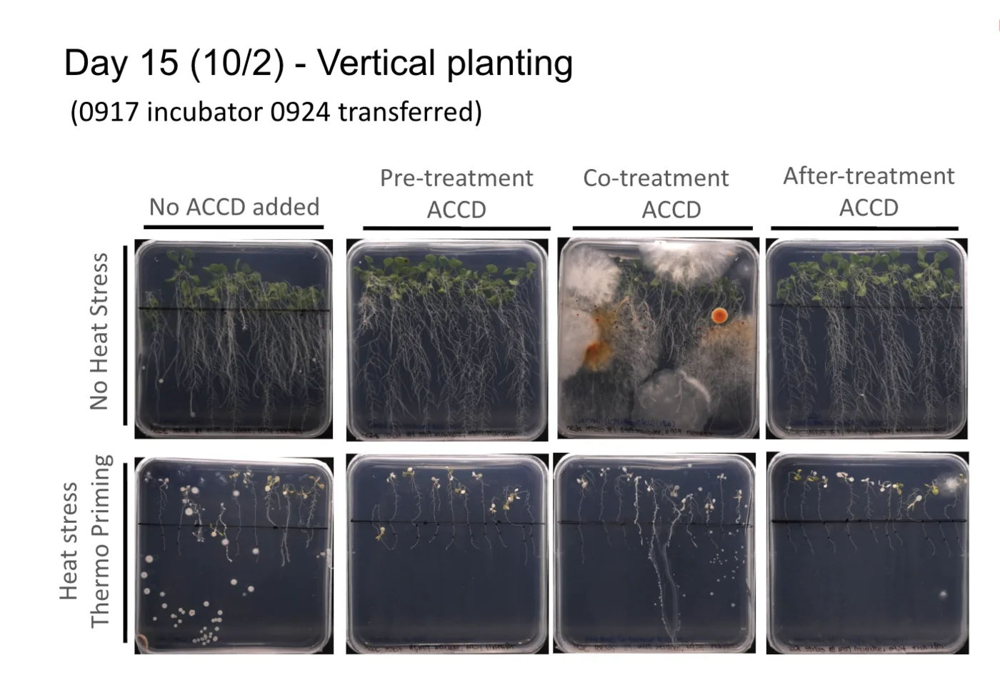
Through these experiments the agar system became a platform for investigating stress severity, protectant concentration and treatment timing, and it now carries a calibrated salt ladder, a dose that works for trehalose and a timing answer for ACC deaminase under each stress. Reproducible protection by our own protectants is not yet established; what has improved is the precision with which we can test for it.

SoilPlant system
Alongside the agar and hydroponics work we grew Arabidopsis in soil, closer to the conditions ReLEAF would be used in, as a separate platform for testing whether observations from controlled environments carry over.
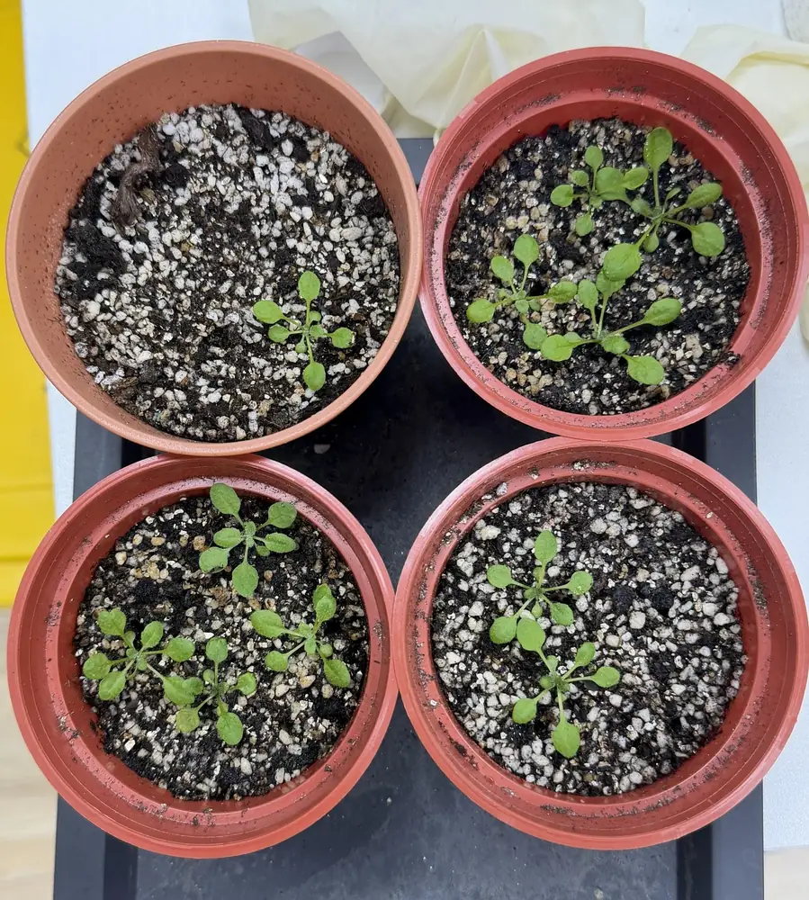
The first problem was a consistent growing method. Four trays compared seedlings transplanted at three days old with seedlings transplanted at seven days old. The plants established themselves, but watering and contamination proved difficult, and mold in one tray meant removing the affected pots and managing moisture more closely.

We adjusted our watering and, in August, added trays sown directly into soil, monitoring growth through daily photographs. Developmental stage mattered: some of the earlier plants had begun flowering, which makes them unsuitable for experiments on vegetative growth.
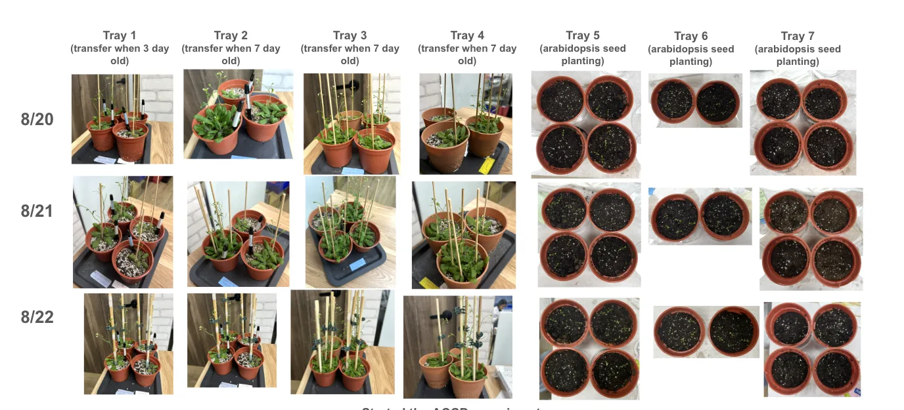
With soil-grown plants established we introduced salinity stress and tested ACC deaminase (ACCD). Unlike agar, where the concentration in the medium is defined directly, soil makes the relationship between salt added and stress experienced indirect, so we treated soil as a separate stress model rather than transferring concentrations from the agar experiments.

Two published ways of setting soil salinity went in side by side on 6 September, and the wash protocol produced visible growth inhibition where the accumulation method produced almost none, so the wash carried the trials. On 12 September ACC deaminase went on at three timings under a wash rising to 300 mM NaCl. Post-treatment holds the most green rosettes of the three timings; the pots have not been scored, so that reading is by eye.
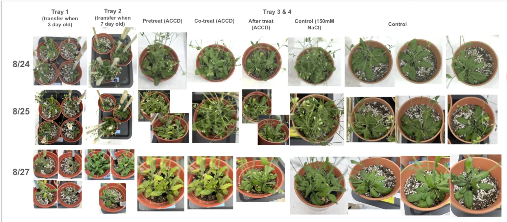
A heat trial followed on 22 September, the same three timings under 37 °C for five days and five days of recovery at 25 °C. Neither soil trial establishes a reproducible protective effect, and both show how closely plant age, treatment timing and environment have to be controlled before a protectant can be evaluated outside agar.

The three plant systems gave three levels of control: agar for stress-dose and treatment experiments, hydroponics for control of the plant’s liquid environment, and soil for conditions closest to those ReLEAF would operate in. Moving between them showed how far the experimental conditions themselves decide what can be concluded about protection.
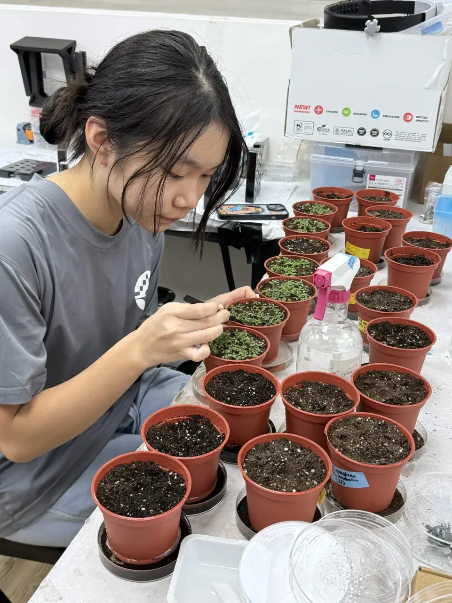
BioreactorBioreactor and hardware
Once we had decided that ReLEAF would produce protectants onsite, we needed to culture our engineered Bacillus subtilis continuously while separating the bacteria from the protectants they secrete. We took a hollow-fiber membrane bioreactor as the starting point: the membrane retains the bacteria and lets smaller molecules pass into a separate collection stream.
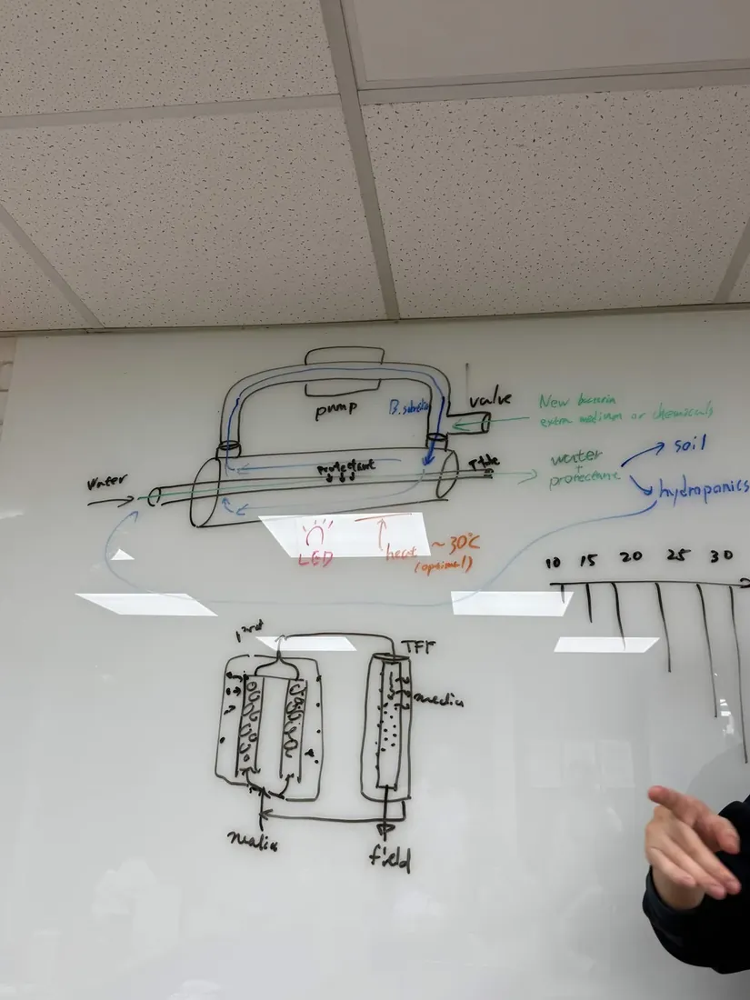
The first prototype tested one question: could the system hold a bacterial culture while medium was perfused continuously through the hollow fiber, and keep that culture contained?
The first cycle failed on two counts. A leak developed around the pump head, which forced us to stop the experiment early, and the OD600 measured in the tubing differed from the reservoir, indicating that the culture was not evenly mixed. Circulating the culture was not enough on its own: the reactor also needed reliable connections and effective mixing.

We redesigned the system for the second cycle. We improved the tubing connections, introduced magnetic stirring to reduce sedimentation, and moved the sampling point to the reservoir outlet so that a sample represented the culture as a whole.
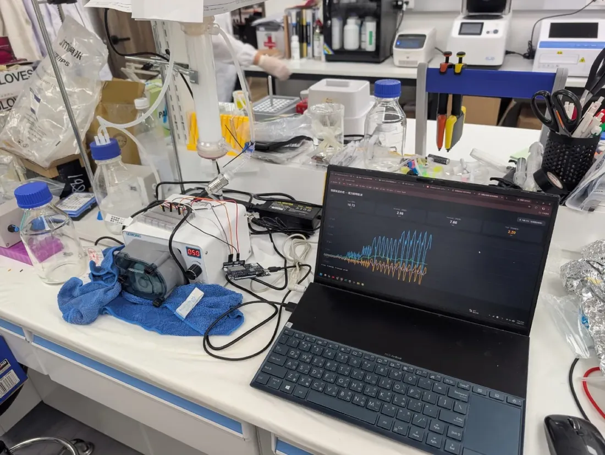
The redesigned system completed a growth run without leakage and produced a complete growth curve, the culture reaching OD600 0.8–0.9 after about two hours. Several components changed between cycles, so we cannot attribute the improvement to any one of them; the pump-head leak did not recur in later tests.
We then tested one of the reactor’s most important functions: keeping engineered bacteria contained. Medium collected from the shell side of the hollow fiber was plated on LB agar, and no colonies were observed. This is preliminary evidence that the membrane retained the cells.

Monitoring growth still required repeated manual sampling. We therefore developed an in-line OD600 photometer that reads turbidity inside the closed circulation loop, refining its optical design and signal processing to improve reliability — including a dual-light-path configuration — and comparing its readings with a commercial BioDrop spectrophotometer.
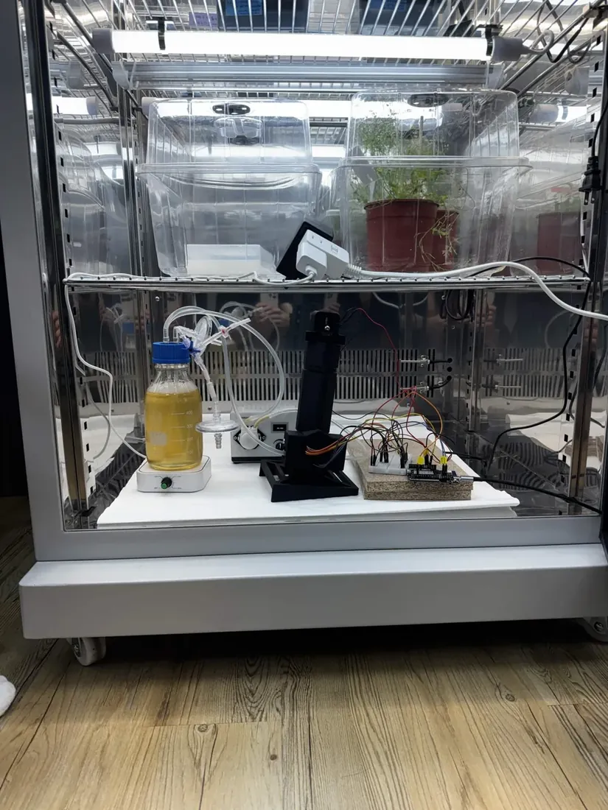
The hollow-fiber cartridge also governs the hydraulics of the loop. We added flow and pressure sensors and ran experiments across pump settings. Initial pressure measurements were not reproducible, which prompted further testing; we then compared circulation through plain tubing with circulation through the hollow-fiber module and found that the module adds hydraulic resistance, with the measured pressure drop rising as flow rate increased.
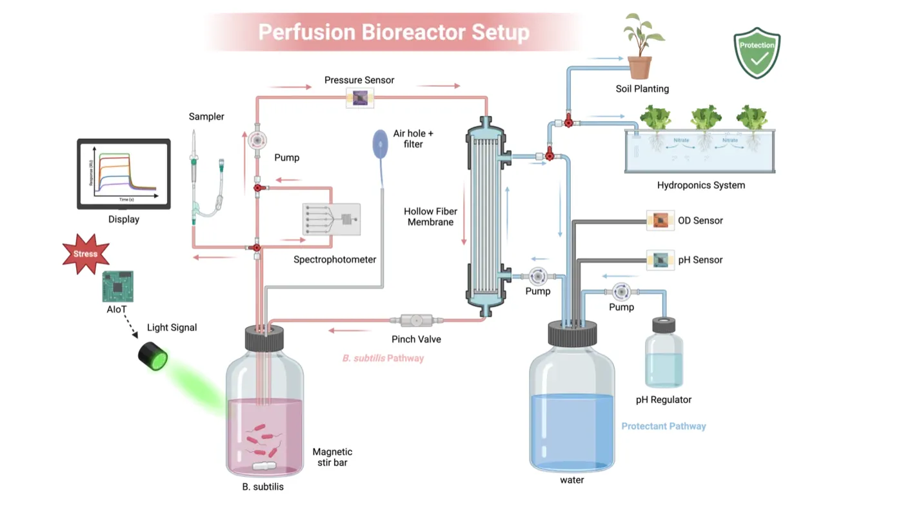
With these improvements we began integrating the instruments needed for more autonomous operation. The current system incorporates automated pumping, magnetic stirring, and sensors for OD600, pH, flow rate and pressure. We also attempted to measure dissolved oxygen, which governs bacterial growth, but those measurements were unsuccessful.

Once the reactor ran reliably we asked whether it could support ReLEAF’s biological purpose: producing a protectant and transferring it through the hollow-fiber membrane. During the ACCD design–build–test–learn cycle we demonstrated ACCD production and investigated its passage through the system. No further leakage was observed in any of the bioreactor tests, including this cycle. The two October runs then went through an anti-His ELISA, which put ACC deaminase in the reactor at 3.4 to 6.5 µg/mL from the first hour through 41 h of operation. That settles how much protein the reactor holds; how much of it is still active when it reaches the collection stream is a separate measurement, and that one is not yet reliable.
Through these iterations the bioreactor became an integrated system that supports bacterial growth, reports its own operating conditions and produces ACC deaminase at a concentration we can state. The initial leakage problems are resolved and the monitoring and containment functions are established, but output holds at a few µg/mL and does not rise over a run. Our focus is now on raising functional protectant output and validating long-term reliability.
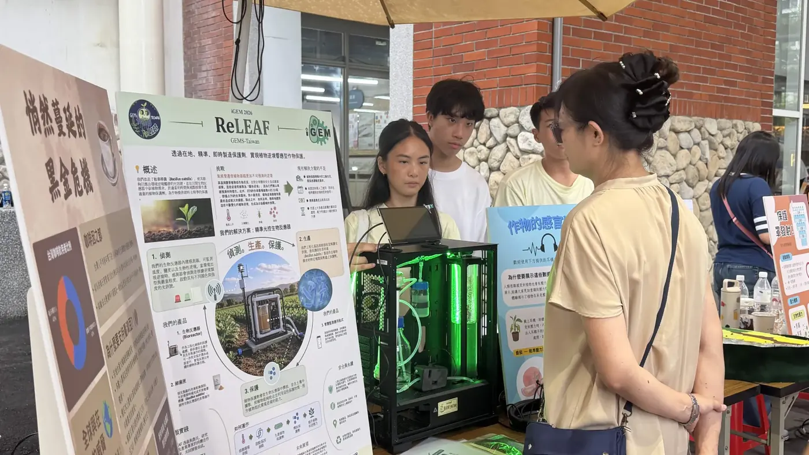
PhotometerBioreactor and hardware
As the bioreactor developed, it became clear that removing samples to measure bacterial growth would interrupt the culture and make continuous monitoring impractical. We therefore designed an in-line photometer that measures OD600 directly from the flowing culture, without opening the system.
The first prototype used a horizontal optical path with adjustable components for the LED, lens, beamsplitter and sensors. Its readings fluctuated significantly, from two causes: bubbles accumulated in the flow cuvette and crossed the light path, and the adjustable components could shift out of alignment.
We rotated the optical path to the vertical and tightened the tolerances between components, so that bubbles rise away from the light path instead of remaining in the cuvette, and added valves and syringes so trapped air could be removed from the tubing.
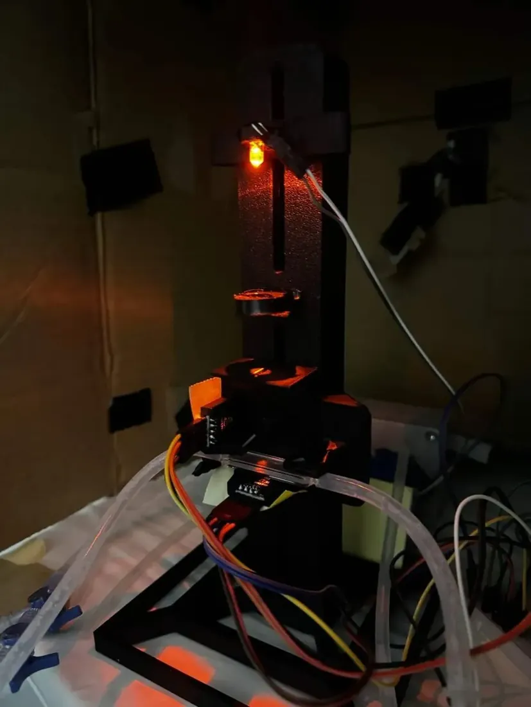
The vertical design reduced the problem, but bubbles could still cling to the cuvette wall, so we tilted the entire optical channel by 10°, moving them toward the outlet instead of through the measurement region. Almost all bubbles then cleared within about a quarter of a second, and the difference from the BioDrop reference fell from roughly 20% to 8% in one paired measurement, with the LED still imperfectly aligned.

In the fourth iteration we moved from an adjustable prototype toward a reproducible instrument: the optical components were locked into fixed positions, TPU lining prevents movement, the light path is enclosed against ambient light, and the angled stand is reinforced so that the tubing cannot shift.
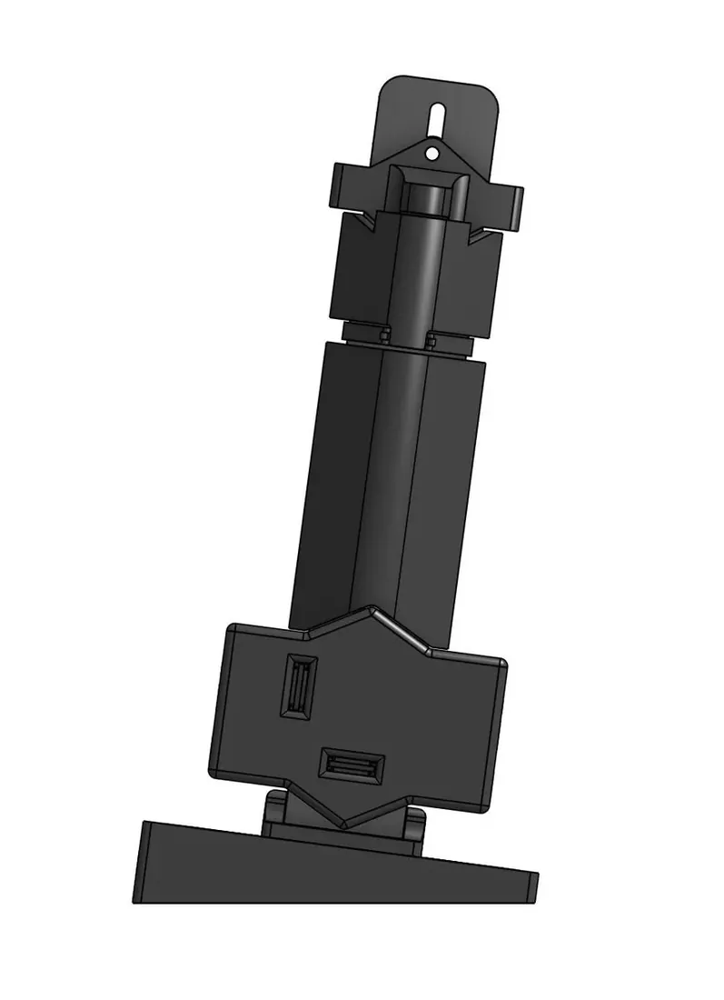
We also made the measurement ratiometric. A beamsplitter sends part of the light directly to a reference sensor while the remainder passes through the culture; comparing the two signals accounts for changes in LED intensity, so the reading depends less on the light source.
The instrument was then joined to a live dashboard, which records the sample and reference signals, calculates their ratio, reports OD600 and logs continuously. A filter based on the median absolute deviation, with additional bubble-detection checks, prevents disturbances from being read as bacterial growth; on SiO₂ suspensions these checks caught 97% of disturbed readings and rejected no clean ones.
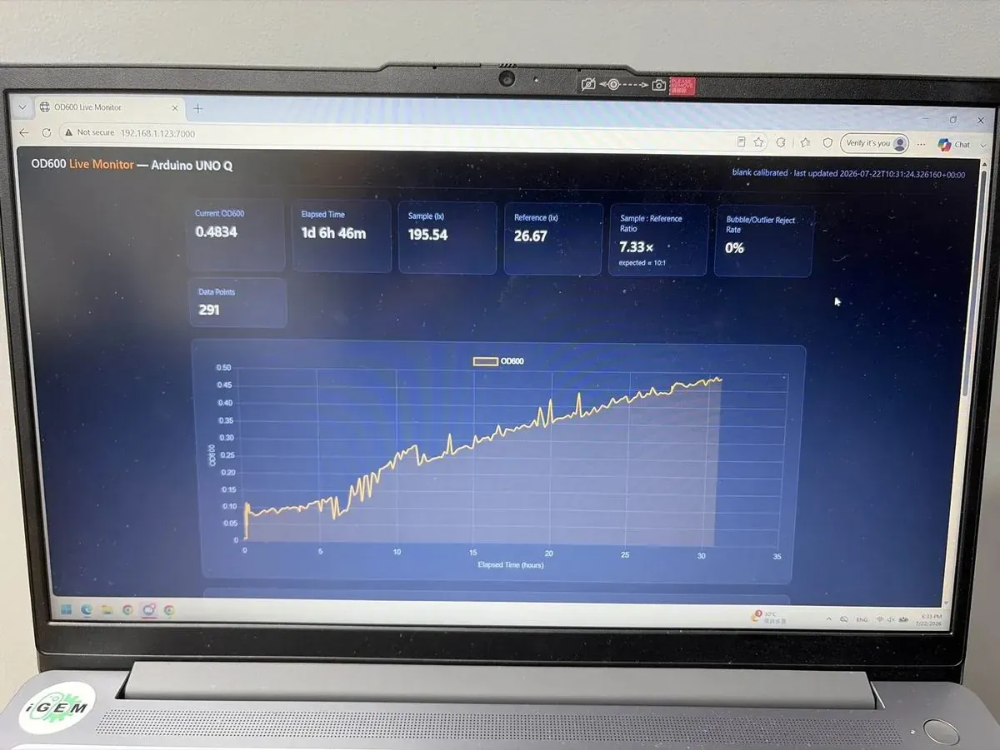
We next tested whether the photometer could operate continuously rather than produce individual measurements. It ran in line for over 400 hours with no manual sample withdrawal, recording 2,132 measurements in the first 336, and caught a sudden change from a recirculation-pump failure — a change that would not have been seen between scheduled manual checks.
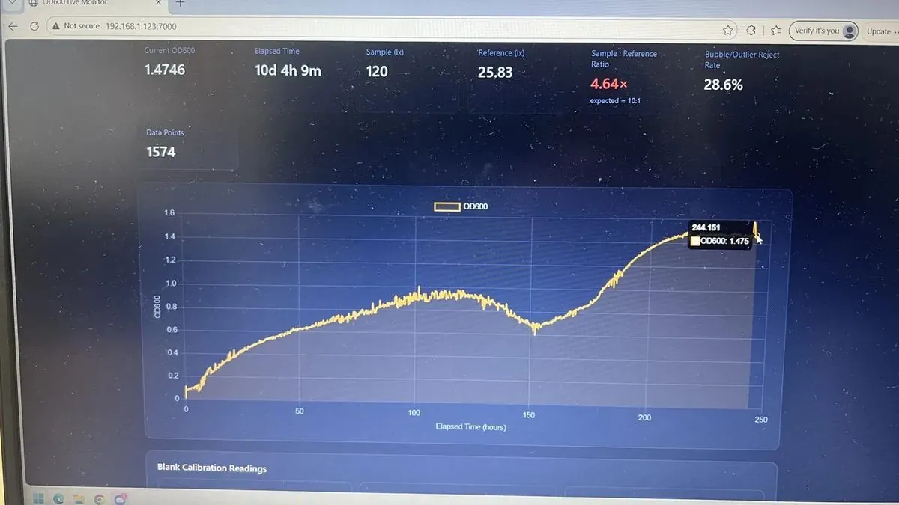
We then evaluated the larger photometer against a commercial BioDrop spectrophotometer using titanium dioxide (TiO₂) suspensions. Across two calibration runs the raw measurements showed a median paired difference of 3.8%, and both instruments were strongly linear against the mass of TiO₂ added, so no correction transform was required. These runs did not cover higher optical densities, so the usable measurement range was still open.
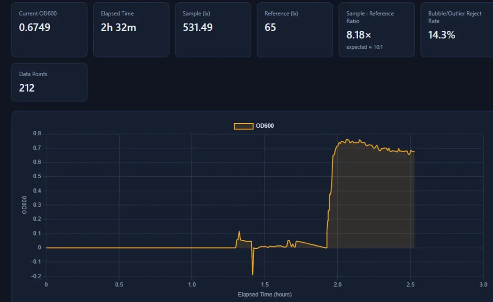
To test a smaller and cheaper alternative we built a simplified photometer, replacing the beamsplitter and lens with optical fibers. This cut the instrument’s size by more than two-thirds while keeping separate sample and reference measurements. Against the BioDrop on SiO₂ suspensions the larger photometer agreed almost one-to-one up to OD600 2.5 (slope 0.995); the simplified version was linear across the range tested (R² = 0.992) but read about 5.6 times low and needed rescaling. Both track turbidity, and the larger photometer resolves it more finely, so it stays our design for bioreactor integration.
The photometer has gone from an unstable optical prototype to an integrated instrument that monitors OD600 continuously, with over 400 hours of operation behind it. Our priorities now are accuracy at higher optical densities, performance across culture conditions, and the simplified design.

ACCD productionGenetic circuit and production
Our goal was to engineer Bacillus subtilis to produce ACC deaminase (ACCD), the enzyme that breaks down ACC, the precursor of the plant stress hormone ethylene. Ultimately we wanted ACCD production to respond to green light, so that ReLEAF connects stress detection to on-demand production. To validate the system step by step we divided production into two levels: Level 1, constitutive ACCD production, and Level 2, green-light-controlled ACCD production.
Level 2 is built on the CcaS/CcaR two-component system: PCB chromophore production, green-light sensing by CcaS, signal transduction through CcaR, and downstream expression of ACCD. Before testing whether light could regulate production, we first had to establish that our engineered bacteria could produce detectable ACCD independently of light.

Level 1 — establishing constitutive production. We assembled an ACCD expression construct under the constitutive Pveg promoter, so that ACCD is expressed without light activation, verified the genetic assemblies by PCR and sequencing, and introduced the constructs into B. subtilis. Successful assembly and transformation do not by themselves demonstrate that the bacteria produce ACCD.
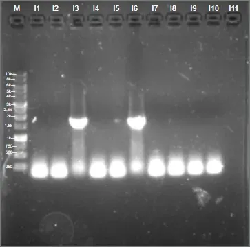
To test for protein expression we used Western blotting against the His-tagged ACCD. Our earlier blot revealed no detectable ACCD in the samples tested, so successful genetic construction had not yet translated into confirmed protein production. We therefore continued to evaluate expression and protein recovery rather than assume the assembled construct was functional.

A subsequent Western blot showed a band near the expected molecular weight of approximately 37 kDa in the constitutive ACCD expression sample, providing evidence that Level 1 can produce detectable ACCD protein. Detection is not quantification, so we put the question onto an anti-His ELISA read against a standard curve and sampled the two October reactor runs through it. ACC deaminase was there from the first hour and stayed between 3.4 and 6.5 µg/mL for the length of both runs, which went to 30 and 41 h; the run whose pH was corrected automatically and the run corrected by hand came out indistinguishable, averaging 5.0 and 5.1 µg/mL. The concentration does not climb with time, which is what a reactor drawing protectant off through the membrane should do, and it is the first figure we have for how much protein the system makes.
We therefore moved from protein detection to enzymatic activity. ACCD breaks ACC down into α-ketobutyrate and ammonia, so either product reports activity. An earlier DNPH-based measurement gave a preliminary estimate of 7.25 mU/mL in reactor permeate, but this single result was below the assay’s quantification limit and cannot serve as reliable quantitative evidence.
To improve the activity measurement we pursued the Berthelot (indophenol blue) assay, which detects the ammonia released during ACC degradation. Both the rich culture medium and the ACC substrate itself interfere with it, so we investigated sample dilution and developed an ACC-compensated calibration to account for those background signals. This improved our ability to evaluate ACCD activity, but reliable replicated quantification of functional enzyme output remains outstanding.
Level 2 — developing green-light-controlled production. With constitutive expression demonstrated, we continued assembling the CcaS/CcaR regulatory system to place ACCD production under green-light control. The PCB-production, light-sensing, signal-transduction and responsive-expression modules were constructed and verified at Level 1, and three Level 2 assemblies passed junction checks. The same anti-His ELISA then went onto Level 2 cultures grown in the light plate under red and green at 100%. It put a figure on a difference the Western blot could only call small: 12.9 against 11.8 µg/mL at 13 h, and 12.5 against 12.1 µg/mL at 16 h, green over red each time. Two samples a side, ranges that overlap, and growth that was the same under both colours: the circuit is assembled and the assay now reads it, but green-light control of expression is not yet demonstrated.
Level 1 now has a protein figure from inside the reactor; how much of that protein is active remains the open question, because concentration and activity are different measurements and only the first of them is reliable yet. Level 2 is assembled, verified at its junctions and readable by the same assay, with its light response still inside the scatter. Our next steps are reproducible enzymatic activity, higher yield, and enough replicates under green and red light to tell a real difference from this one.

Expert engagementOutreach
We started with the question “What should we test?” The project was broad: several stresses, Medicago, hydroponics and several possible ways of reading plant responses. Dr. Lin pressed us on real plant applicability and on the choice of target plant, while Prof. Cheng offered a more controllable path, Arabidopsis grown on agar at an early stage.
IterationMedicago + hydroponics + many stresses→Arabidopsis + controlled growth + focused stresses

Next we asked “What should the bacteria actually do?” Our original concept delivered protective compounds such as proline or trehalose. Dr. Verslues challenged that approach, pointing to the plant’s own stress-response mechanisms and to the value of detecting stress early rather than recovering from it.
IterationSupply protection after stress→Use bacterial products/signals to influence plant stress responses earlier
“Where should production happen?” Prof. Chen proposed treating the hardware as a printer and the biofertilizer as its ink, which pushed us toward defined input–output relationships and a controlled bioreactor rather than releasing engineered bacteria into soil. Dr. Brophy made the biosafety case that physical containment, not a kill switch, should be the primary mechanism. Both led to our membrane-based containment strategy.
IterationEngineered bacteria interacting directly with the environment→Contained production system + protectant delivery
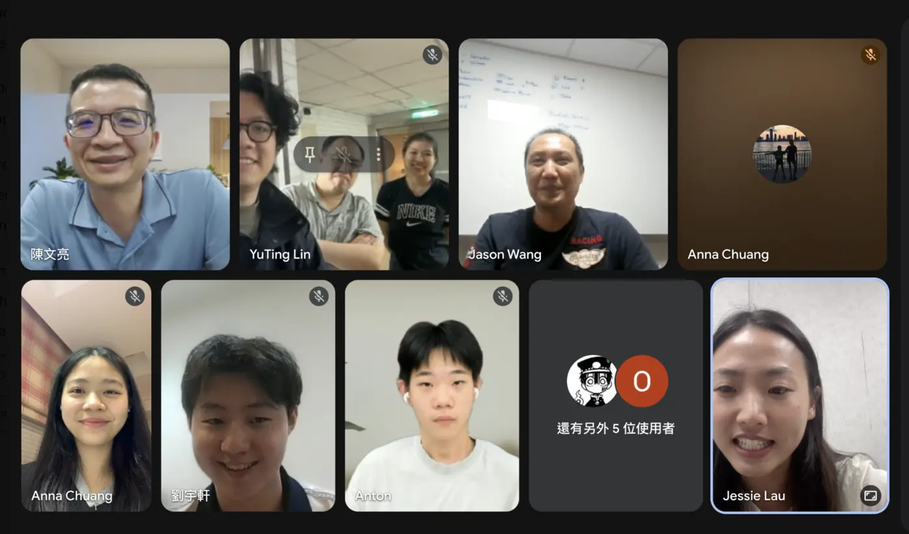
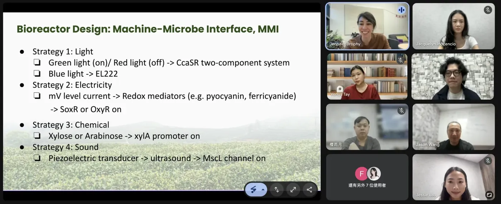
“Does the protectant itself actually work?” By June we were planning to integrate protectant production into the bioreactor. Dr. Sattely made us step back and validate the protectant first, with fewer stresses and clearer, measurable outcomes.
IterationBuild the complete system first→Validate the biological output before integration
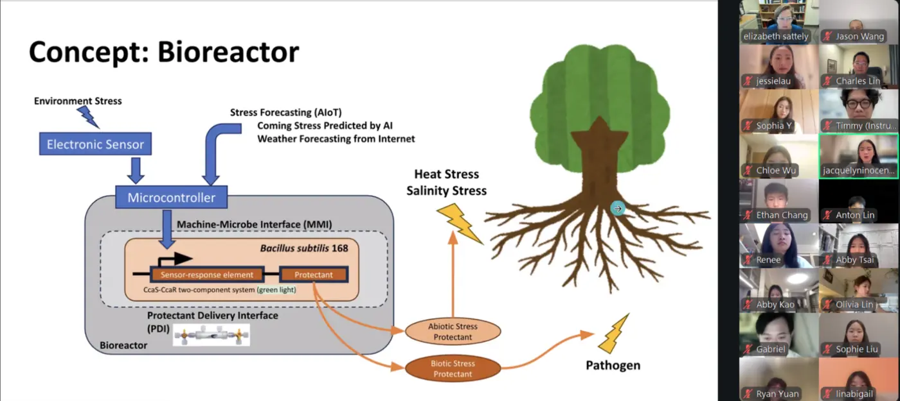
“How do we know the system works together?” Later consultations moved to dose, timing, delivery, modelling and validation rather than individual components. Prof. Chen pressed for feedback loops between experimental data and the model; CH Biotech for plant performance under stress and realistic delivery methods; Prof. Huang for how much protectant reaches the plant, when it arrives and how often it is applied.
IterationCan each component work?→Can the components produce the right output, at the right amount, at the right time, in the right place?
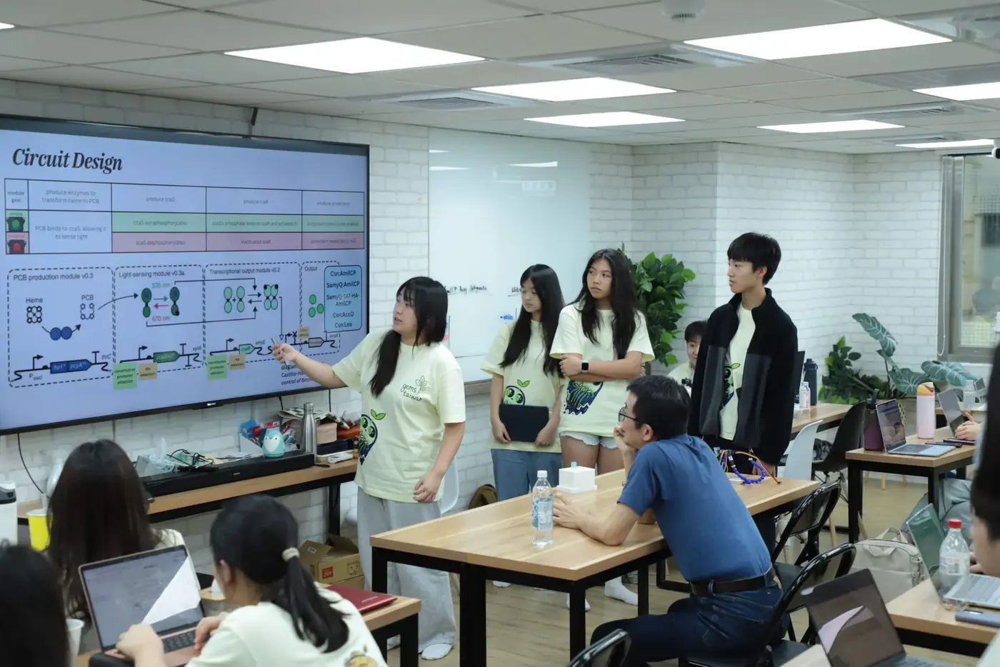
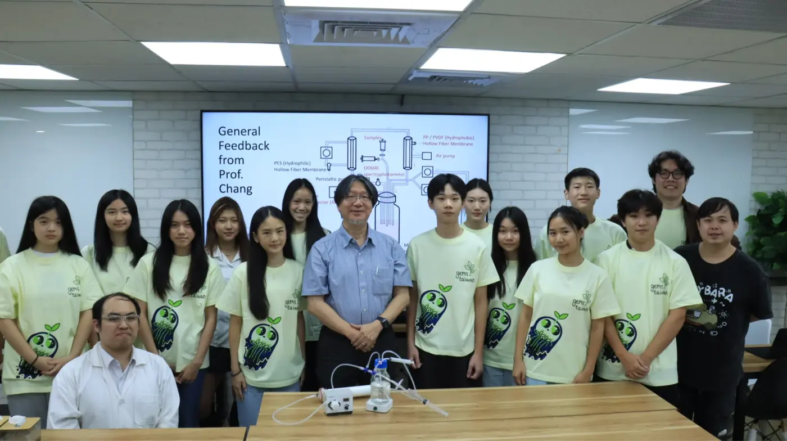

“How do we prove what we are claiming?” The most recent consultations were about experimental rigour. Prof. Huang noted that protein quantity is not enough without identity, solubility and function together; Prof. Cheng, that the experimental conditions themselves create stress and have to be standardized. Our September meeting with Dr. Sattely and Prof. Endy set the agenda: separate the engineered bacteria from the protectant, demonstrate ACCD production and secretion, strengthen the controls, and state what each experiment proves.
IterationCollect results→Build evidence that clearly demonstrates what each result means
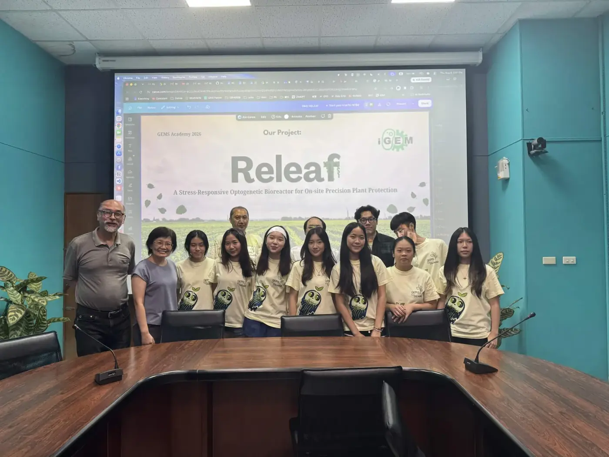
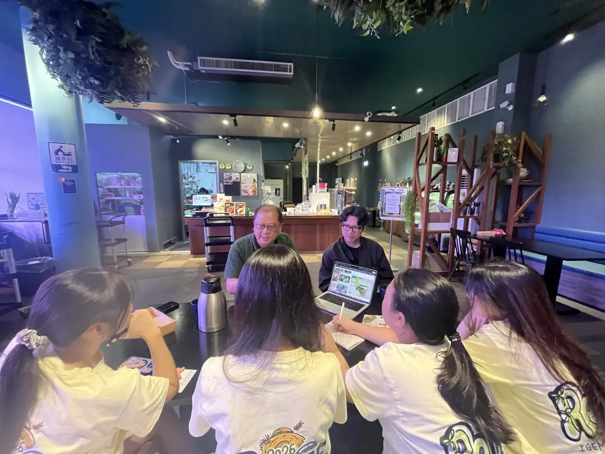

ReLEAF validation
We returned to the question we started with: does ReLEAF work as a complete system?
The final ReLEAF system
The final system brings together the components developed across the project. Rather than evaluating these components independently, we now evaluate whether they form a continuous and functional chain—from detecting plant stress to activating production, producing and containing the protectant, and ultimately reducing the effects of stress.

Criteria validation
Near the end of the project we compared our quantified results with the criteria set out above.
- Successful
- Partial success
- Unsuccessful
| Functional requirement | Acceptance criteria | Current status |
|---|---|---|
| Detect environmental stress within a useful timeframe, with sensor output changing appropriately with increasing stress | Sensor correctly identifies the presence/absence of the target stress with ≥90% accuracy across predefined test conditions. Target: ≤60 sec. Sensor signal shows a monotonic and reproducible relationship with at least 3 predefined stress levels. | Partial success |
| Retrieve forecast data and turn it into a stress call | Weather-service forecast is retrieved and drives the rice-blast wet-period rule, and the growth forecast we registered a fortnight in advance was scored on the 14–16 October run at r = 0.286 h⁻¹, inside its registered interval. The ≥90% agreement test of predicted against observed threshold crossings has not been run. | Partial success |
| Apply the commanded light condition to the culture | LPA holds six light conditions on command and ran them through a full culture experiment. The twin we ran has not yet connected leaf wetness or the forecast to the green-light decision, so the ≥90% figure has no stress-triggered trials to score against. | Partial success |
Level 1 — Constitutive production
| Criteria | Evidence needed | Current status |
|---|---|---|
| Detect ACCD production | Western blot showing the His-tagged ACCD band in the constitutive expression vector | Successful |
| Establish an activity assay that reads through our matrix | Berthelot (indophenol blue) calibration compensated for the ACC background: ammonium quantifiable against a 2 mM ACC background, slope 0.0005 and R² 0.9598 | Successful |
| Demonstrate enzyme activity | ACCD activity is reproducibly above the assay’s quantification limit, with appropriate controls and replicates. | Partial success |
Level 2 — Green-light-controlled production
| Criteria | Evidence needed | Current status |
|---|---|---|
| Assemble and verify the CcaS/CcaR circuit | Three Level 2 clones amplified across all three internal junctions, every lane positive; sequencing not yet returned | Successful |
| Quantify ACCD expression under green light against controls | Anti-His ELISA on light-plate cultures: 12.9 against 11.8 µg/mL at 13 h and 12.5 against 12.1 µg/mL at 16 h, green over red both times. Two samples a side and overlapping ranges, so the difference is measured but not established. | Partial success |
| Carry the light comparison through to an activity readout | The ACC-compensated Berthelot calibration reads ammonium through our culture matrix, and the green and red cultures are now sampled and quantified by ELISA. Enzyme activity itself has not yet been measured on them. | Partial success |
| Functional requirement | Acceptance criteria | Current status |
|---|---|---|
| Retain engineered bacteria inside the bioreactor | No detectable viable engineered cells in the output stream above the assay’s validated detection limit. | Successful |
| Maintain membrane integrity | No evidence of membrane failure, abnormal leakage, or loss of containment during the intended operating period. | Successful |
| Maintain containment over time, no leakage | Containment criterion is satisfied throughout the entire intended run. | Successful |
| Prevent contamination of the output stream | A membrane/flow/pressure abnormality or downstream biological signal can be detected before continued operation creates a larger problem. | Successful |
| Functional requirement | Result on record | Current status |
|---|---|---|
| Measure bacterial concentration | Against a BioDrop reference the in-line photometer reads a regression slope of 0.995 up to OD600 2.5 on silica and a median paired difference of 3.8% on TiO₂, with no correction transform applied. Above OD600 2.5 it reads about 0.33 OD600 low, and the range has not yet been repeated on B. subtilis. | Successful |
| Monitor culture pH | The probe sits in the medium reservoir and is logged live alongside OD600, flow and pressure, tracking pH through a run. | Successful |
| Monitor bioreactor pressure | The first pressure series did not repeat. The series of 16 August, eight pump speeds with and without the hollow-fiber module, gives a pressure drop of 0.096 bar across the module at 263 mL/min, 1.03 times the value predicted for eleven open fibers, so none are blocked. | Successful |
| Monitor bioreactor flow rate | The turbine flow meter logs continuously with the pressure channels. Wall shear computed from the pressure transducers and from the flow meter agree to 2.8%, so each sensor checks the other. | Successful |
| Monitor dissolved oxygen (DO) | The DO probe could not be calibrated, and neither probe can be autoclaved, so dissolved oxygen is not measured on the reactor. | Unsuccessful |
| Functional requirement | Acceptance criteria | Current status |
|---|---|---|
| Protectant reaches the plant at an effective dose, produces a measurable biological effect | Treated stressed plants show a statistically significant improvement in at least one predefined primary plant-health metric compared with stressed untreated controls. | Partial success |
| Improve plant performance | Treatment produces at least a 20% improvement relative to the stressed control in the primary metric, unless literature or baseline variability supports another threshold. | Partial success |
| Timing is appropriate, affects protection in a useful/appropriate way | At least one treatment dose/timing condition produces a reproducible protective effect, and the relationship between dose/timing and response is characterized sufficiently to identify an effective operating range. | Successful |
| Effect is reproducible | The protective effect is observed across independent biological replicates/experiments. | Successful |
What counts as success?
Our success criteria provide a concrete definition of what it means for ReLEAF to function. When the evidence demonstrates that each critical stage performs its intended function and connects to the next stage, we consider the ReLEAF system successfully validated against its current design goals.
This does not mean that ReLEAF is a finished or fully optimized technology. A successful system can still be made more efficient, reliable, scalable, or accessible. Instead, validation establishes that the fundamental pathway we designed—from Detect, Forecast & Activate → Produce → Contain → Monitor → Protect—can function as intended.
In this way, our failures were not endpoints, but measurements that guided the system toward function. The final ReLEAF system represents not the end of development, but a validated foundation for further improvement.